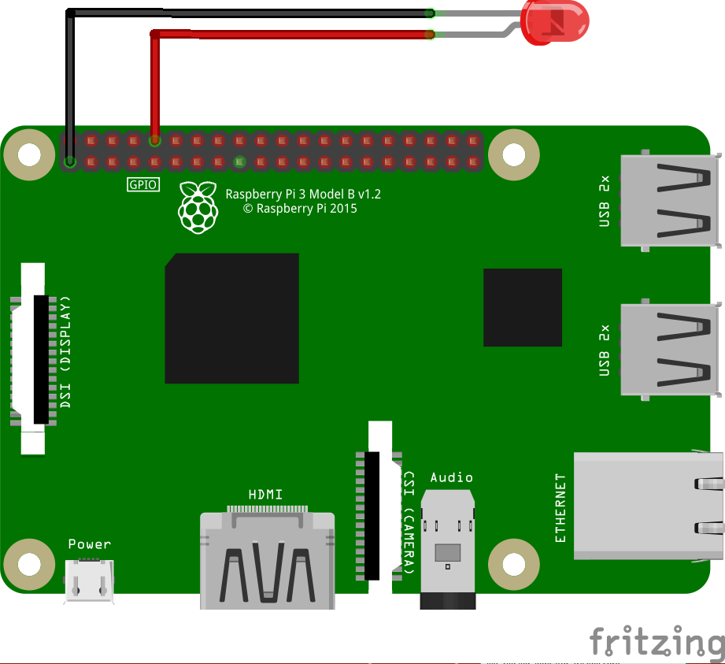
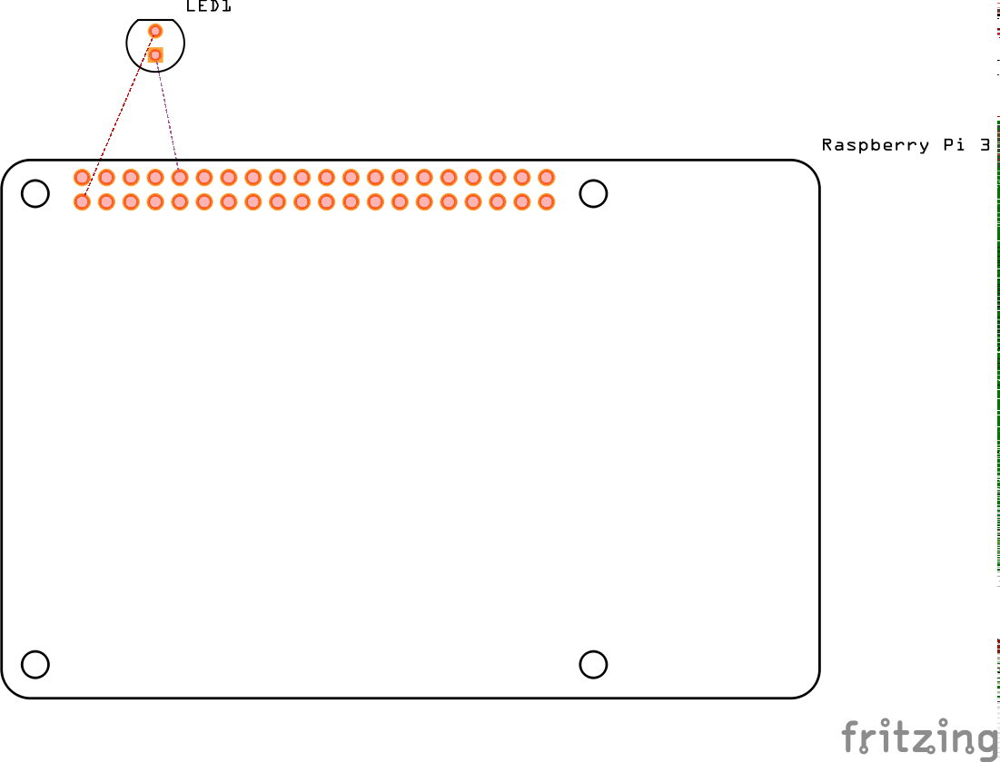

树莓派 GPIO 入门
GPIO，通用型之输入输出（General Purpose I/O）的简称。树莓派内核中已经编译自带了 GPIO 的驱动，可以直接使用第三方函数库来进行编程。
比较常用的第三方函数库有：
- Python GPIO
- wiringPi
- BCM2835 C Library
- Shell
树莓派 3 Model B 的 40 Pin GPIO 编号

使用 GPIO 接口控制 LED 闪烁
硬件清单
- 树莓派 3 Model B x1。本人机子出自 Element14，GPIO 请参考上图。
- LED 发光二极管 x1。
- 母头杜邦线 x2。这些材料在国内很容易买到的。
原理说明
LED 发光二极管有一长一短两根针脚。长的针脚接正极（GPIO 有 3.3V 或 5V 的高电平针脚输出），较短的针脚接 GND 形成电位差产生电流流动从而点亮 LED。 本示例没有直接连接正极端，而是连接到一个 GPIO 针脚上。最后通过程序控制 GPIO 口的电位高低状态即可控制LED的亮（GPIO口设置为高电平）或灭（GPIO口设置为低电平）。
硬件连接
面包版图
PCB 连接图：

代码示例
#!/usr/bin/env python # encoding: utf-8 import RPi.GPIO as GPIO import time # 指定 GPIO 口的选定模式为 GPIO 引脚编号模式（而非主板编号模式） GPIO.setmode(GPIO.BCM) # 指定 GPIO15（就是 LED 长针连接的 GPIO 针脚）的模式为输出模式 # 如果上面 GPIO 口的选定模式指定为主板模式的话，这里就应该指定8号而不是15号 GPIO.setup(15, GPIO.OUT) # 循环10次 for i in range(0, 10): GPIO.output(15, True) time.sleep(1) GPIO.output(15, False) time.sleep(1) # 最后清理 GPIO 口 GPIO.cleanup()
comments powered by Disqus